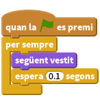
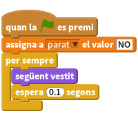
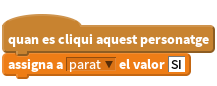
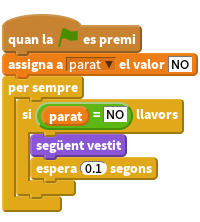
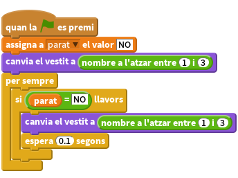
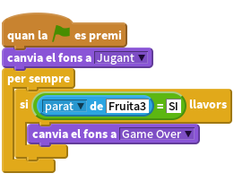
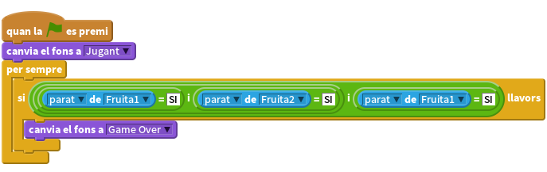

Introduccció
Aquest és un joc semblant a les màquines escurabutxaques. Consisteix en anar canviant el vestit de tres personatges fins que els tres mostrin la mateixa imatge.

Pas 1: Crear un personatge que canviï de vestit
Llista de tasques
Anem a importar imatges diferents per el nostre joc
- Comenceu un projecte d’Scratch nou. Esborreu el gat clicant amb el botó de la dreta i triant Esborra
- Primer de tot afegim un fons de la galeria per a l’escenari. Escolliu el fons rays de la categoria Altres i llavors esborreu el fons blanc original.
- Importeu un nou personatge
- Trieu qualsevol imatge de qualsevol carpeta. Nosaltres hem utilitzat things/bananas1, però podeu triar qualsevol imatge que us agradi.
- Cliqueu la ‘i’ blava del personatge i canvieu-li el nom a ‘Fruita’.
- Cliqueu la pestanya Vestits i importeu dues coses més. Ara ja teniu 3 personatges (nosaltres vam utilitzar animals/bee1 i things/lego, però podeu utilitzar el que us vingui més de gust).
Ara que tenim els vestits, volem que el personatge se’ls vagi canviant.
Pas 2: Fer que les imatges vagin canviant
Llista d’activitats
- Cliqueu la pestanya de
Programes. - Seleccioneu Control i arrossegueu el bloc
quan la bandera verda es premi. El que poseu a continuació passarà cada vegada que el jugador premi la bandera verda. - De la paleta Control, afegiu el bloc
per semprede manera que s’enganxi a sota. - Cliqueu la bandera verda a dalt a la dreta. Fixeu-vos que ara apareix una petita ombra blanca al voltant del nostre programa. Això significa que el nostre programa està corrent perquè hem clicat la bandera verda.
- Ara cliqueu la paleta
Aspectei arrossegueu dins del blocsegüent vestit - Com alentiríem el programa perquè no canvii de vestit tant ràpidament? Cliqueu a la paleta de
Controli arrossegueu el blocespera 1 segons Ajusteu el temps fins que el canvi a un pas més ràpid (normalment, un temps de 0.1s és suficient). Què passaria si no haguéssim posat el bloc
espera 1 segons?
Proveu el projecte
Premeu la bandera verda.
Els vestits canvien a una velocitat raonable?
Deseu el projecte
Per saber-ne més
- Ajusteu el temps en el bloc
espera 0.1 secs. - Quin temps penseu que faria el joc massa fàcil o massa difícil?
Pas 3: Fer que els personatges deixin de canviar de vestit al clicar-hi a sobre
Llista d’activitats
Perfecte! Ara farem que el personatge canvii el vestit per sempre, però com ho fem perquè parin de canviar de vestit quan hi cliquem a sobre?
Creeu una nova variable clicant a la paleta
Dadesi després al botóCrea una Variable. Anomeneu-laparati seleccioneu la opció “Només per aquest personatge”, i també desmarqueu la caixeta al costat de la variable perquè no es vegi a l’escenari.Al principi del joc, el personatge no haurà estat clicat i per tant posarem el valor de la variable a “NO”.

Ara posarem la variable
parata “SI” quan algú clica el personatge.
Finalment, hem d’aturar els canvis de vestit quan la variable
parattingui el valor “SI”. Afegiu un blocsi...llavorsi un bloc de comparació[] = [](a la paleta dels Operadors) per mirar siparatestà a “NO”.
Proveu el projecte
Premeu bandera verda, espereu un moment i després cliqueu un personatge.
- Canvia el vestit abans de clicar-lo?
- S’atura quan el cliqueu?
- Engegueu el programa un altre cop. S’atura quan poseu el ratolí a sobre, però sense clicar?
- S’atura si cliqueu a qualsevol lloc de l’escenari?
- I si cliqueu sobre algun altre lloc sobre la finestra d’Scratch?
- I fora de la finestra d’Scratch?
Deseu el projecte
Pas 4: Crear els altres personatges
Ara necessitem crear els altres personatges per tal de poder jugar al nostre joc!
- Dupliqueu el personatge (Fruita) clicant-hi a sobre amb el botó dret.
- Dupliqueu-lo una altra vegada. Ara heu de tenir 3 personatges sobre l’escenari.
- Moveu cada personatge per tal que estiguin en línia. Feu-los una mica més petits si ho necessiteu.
Proveu el projecte
Premeu bandera verda. Totes les animacions haurien de canviar. Proveu de parar-les totes de cop!
Deseu el projecte
Pas 5: Posar un vestit a l’atzar a cada personatge
Anem a fer que quan es premi la bandera verda, cada personatge comenci amb un vestit a l’atzar.
Quan engegueu el joc just després de carregar-lo, tots els personatges mostren el mateix vestit i canvien plegats. Seria més interessant (i difícil) si canviéssin de forma menys predictible.
Llista d’activitats
- Si mireu la pestanya
Vestitsper a un personatge veureu que els vestits estan numerats. - Per fer que un personatge comenci amb un cert vestit, anem a afegir un bloc
canvia el vestit a ...amb unnombre a l'atzar entre (1) i (3)(de la paleta Operadors verda), per escollir el número del vestit. També podem fer servir aquest bloc en el
per semprei així el personatge canviï sempre a un vestit diferent cada vegada.
Fes el mateix per a tots els personatges.
Proveu el projecte
Clica la bandera verda. Tots els personatges haurien de canviar de vestit de forma impredictible.
- Com s’hauria de canviar el programa si afegim un altre vestit?
Deseu el projecte
Per saber-ne més
Fer el joc més difícil
Canvieu la dificultat del joc una mica. Una cosa fàcil és canviar la rapidesa amb la que canvien els vestits. Però podem pensar alguna cosa més imaginativa?
Algunes idees:
- Canvieu el número de vestits que té cada personatge.
- Feu que alguns personatges tinguin vestits únics.
- Que els temps entre els canvis de vestit siguin diferents.
Divertiu-vos pensant coses pel vostre compte! Cada cop que feu un canvi, penseu si fa el joc més fàcil o més difícil. És el joc massa difícil o massa fàcil? Com podeu ajustar la dificultat de forma que sigui la justa?
Pas 6: Mostrar un missatge quan el joc s’ha acabat.
Anem a mostrar el missatge “Game Over” quan el joc s’hagi acabat.
Llista d’activitats
Primer, anem a crear un fons diferent per mostrar quan el joc s’hagi acabat.
- Cliqueu a l’escenari i després a la pestanya
Fons. Canvieu el nom del fons actual per “Jugant”. - Dupliqueu el fons i afegiu un text a la còpia que posi “Game Over”. Podeu canviar el tamany del text clicant-lo i arrossegant alguna de les cantonades. Poseu el nom “Game Over” a aquest fons.
- Cliqueu a la pestanya
Programesper a l’escenari i feu que el fons “Jugant” sigui el que s’utilitza quan el joc comença. Com podem detectar quan tots els personatges s’han parat? Recordeu que hem utilitzat la variable
paratper saber si un personatge ha estat clicat? Anem a mirar la variableparatper al personatge Fruit3 per veure si el joc s’ha acabat. Seleccioneu el personatge Fruit3 i busqueu el bloc[posicio x] de [Fruit3]de la paletaSensing, però canviant posició x aparat.
Proveu el projecte
Cliqueu la bandera verda. Apareix el missatge “Game Over” quan cliqueu el tercer personatge?
Què succeeix si pareu la Fruita3 abans d’haver parat els dos altres personatges? Anem a modificar el programa per tal que funcioni independentment de l’ordre en què es cliquin els personatges.
Per mirar que tots tres personatges tenen la variable
paratamb el valor SI, podem fer servir el bloc<> i <>. Aquest és un bloc que pot ser difícil de muntar, intenteu fer-ho per passos i amb molta cura.
Proveu el projecte
Cliqueu la bandera verda. Apareix el missatge “Game Over” només quan s’han parat els tres personatges, sense dependre de l’ordre en que s’han clicat?
Deseu el projecte
Pas 7: Dir-li al jugador si ha guanyat o perdut
L’objectiu del joc és clicar als personatges i parar-los tots quan tenen el mateix vestit. Estaria molt bé també mostrar un missatge per dir si has guanyat o perdut.
Llista d’activitats
- Hem fet el programa que mira si el joc s’ha acabat en el Pas 6, ara només caldria mirar també si el jugador ha guanyat. Aneu als fons d’escenari un altre cop i afegiu el text “Has guanyat!”. Canvieu el nom del fons a “Guanyar”.
- Copieu el fons de nou i canvieu el text per “Has perdut…”. Canvia el nom del fons a “Perdre”.
Ara necessitem alguns blocs més per decidir quin fons hem de posar quan s’acaba el joc. Podem fer servir un bloc `
si..llavors..sinoper veure si el jugador ha guanyat o ha perdut comparant cada[vestit nr] de [Fruita3](a la paleta deSensors) d’un personatge amb el dels altres.![quan la BANDERA VERDA es premi
canvia el fons a [Jugant v]
per sempre
si <<<([parat v] de [Fruit1 v]) = [YES]> i <([parat v] of [Fruit2 v]) = [YES]>> and <([stopped v] of [Fruit3 v]) = [YES]>> llavors
si <<([vestit nr v] de [Fruit1 v]) = ([vestit nr v] of [Fruit2 v])> and <([vestit nr v] of [Fruit2 v]) = ([vestit nr v] of [Fruit3 v])>> llavors
canvia el fons a [Guanyar v]
si no
canvia el fons a [Perdre v]](614d7a92c1ef49492dd97df7060c7c685b86e327.png)
Proveu el projecte
Cliqueu la bandera verda. Apareix el missatge correcte quan el joc s’acaba? Què passarà si els números dels vestits dels personatges no es corresponen (per exemple, el vestit 3 de Fruita2 és una poma i el vestit 3 de Fruita3 és un meló)?
Deseu el projecte
Repte: Fer que el joc ajusti la dificultat automàticament
A l’hora de jugar, us trobareu amb persones de diferents habilitats. Com ajustareu la dificultat del joc depenent del jugador?
Una manera de fer-ho és ajustar la velocitat de canvi dels vestits. Podeu utilitzar una variable, que s’anomeni retard, que ens doni la durada de cada bloc espera per a cada personatge. Si el jugador guanya la partida, la variable retard es pot escurçar una mica (per fer el joc més difícil). Si el jugador perd la partida, la variableretard es pot augmentar una mica (per fer el joc més fàcil).
Probablement també haureu de pensar en fer servir un manera diferent de començar el joc (que no sigui quan la bandera verda es premi, perquè així es podran guardar valors que es podran recordar entre diferents partides.
Deseu el projecte
Ara que heu acabat, ja podeu disfrutar del vostre joc!
No us oblideu de compartir-lo amb la vostra família i amics!